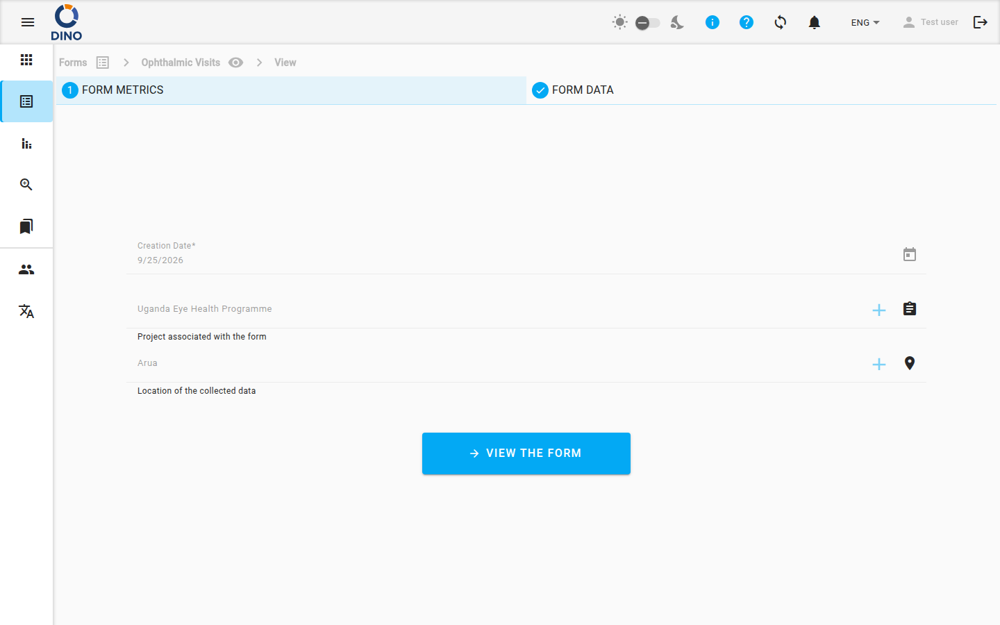

Modificare i dati di un form
La schermata Modifica form ti permette di modificare i dati di un form esistente. Puoi aggiornare i dati, aggiungere nuove informazioni o salvare le modifiche come bozza per completarle in un secondo momento.
Quando apri i dati di un form per modificarli, vedi la stessa interfaccia del form usata per l'inserimento, ma con tutti i dati già salvati compilati.

Come modificare i dati
- Vai alla lista di form del tuo form.
- Individua i dati specifici che vuoi modificare.
- Clicca il pulsante Edit (di solito rappresentato da un'icona a matita) relativo a quei dati. Il form si apre in modalità di modifica.
- Apporta le modifiche desiderate a qualsiasi campo del form.
- Scegli un'azione in fondo al form:
- Salva bozza: salva le modifiche attuali senza inviare il form. Puoi tornare a modificarlo in seguito.
- Invia: salva tutte le modifiche e invia i dati aggiornati del form.
Monitoraggio delle modifiche
Dino registra automaticamente le modifiche che apporti tra i dati originali e la versione modificata. In questo modo si crea uno storico di chi ha modificato cosa e quando.